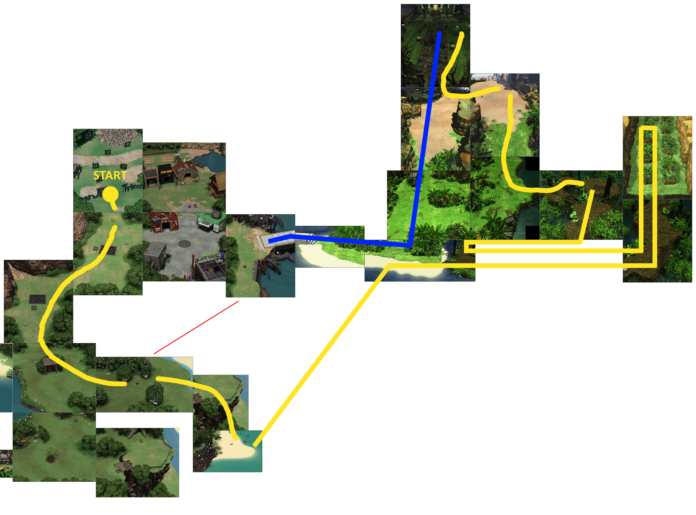
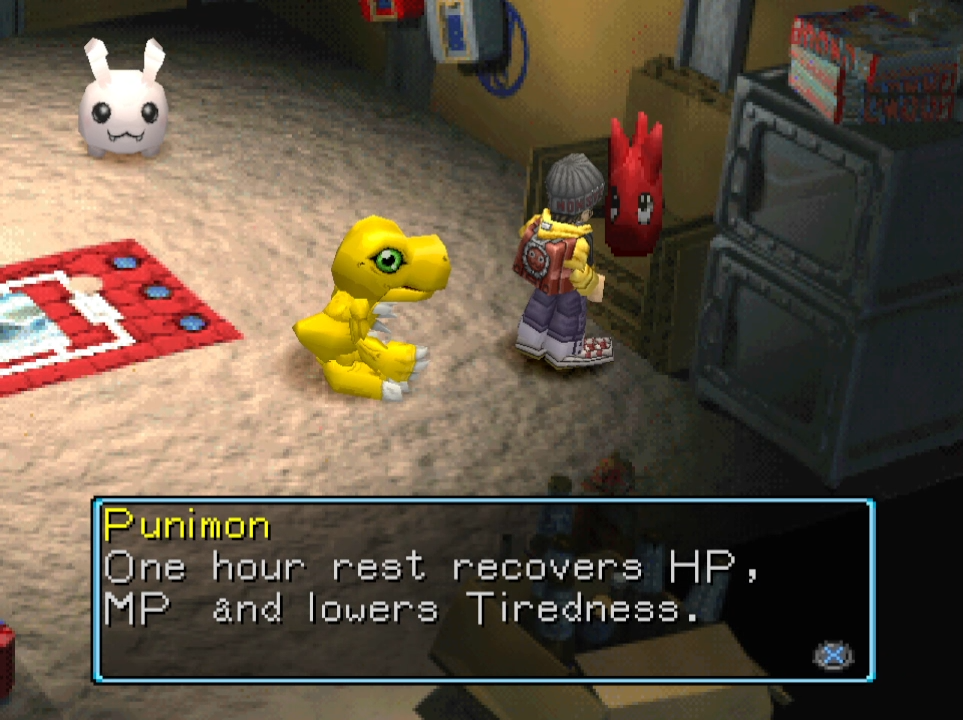
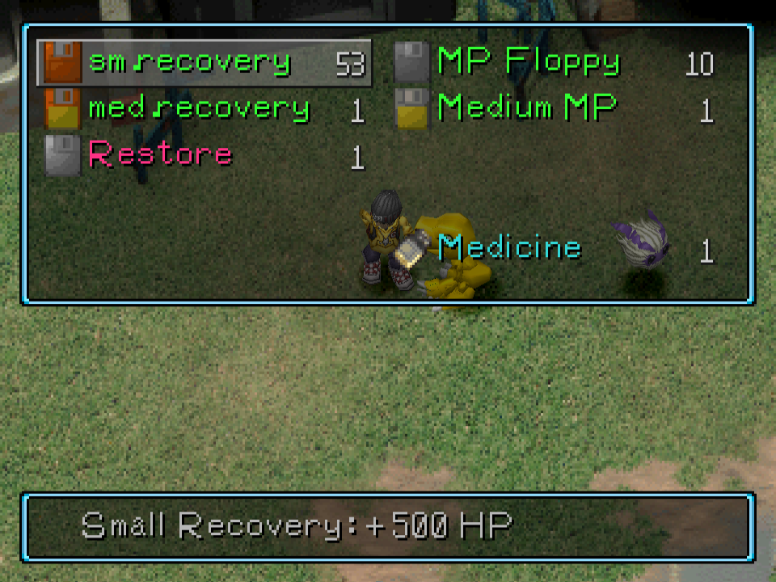
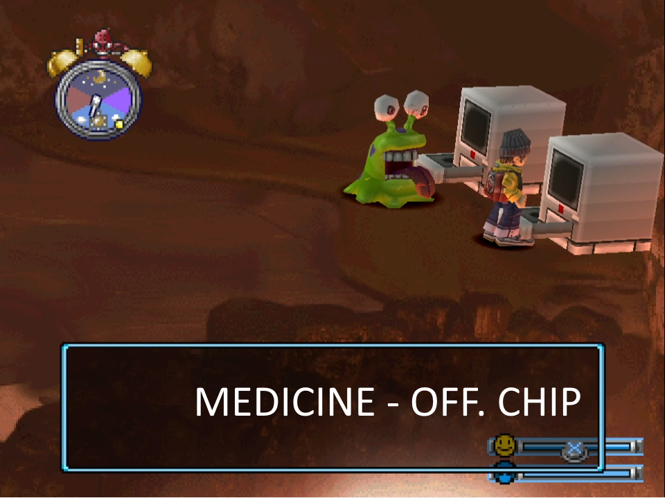

Your digimon in digimon world will be some sort of tamagotchi, he needs to be taken care of. His needs will be shown as a bubble on top of his head, or you can see them in the digimon menu.
Your digimon can get hungry, sleepy, tired and he needs to poop. He also has a mood bar (he can be happy or get angry). You can praise or discipline your digimon.
Digimons have lifespawn, which means it will die after a certain amount of time. If they lose a battle, you will lose one heart. Digimon has three hearts, after you lose all hearts, your digimon will also perish and turn into an egg.
Even if the digimon has that many needs, he won't die if you don't feed him or not let him sleep. The only way to make your digimon live less is when he's not happy or he's angry.
The sole purpose for taking care of your digimon is to make him evolve into a certain digimon. Check evolutions>requirements for more information about this.
Things like not feeding or skip sleeping will anger your digimon, but you can increase your digimon happiness by praising, or giving him certain items like blue apple or happymushrm: Items list. You can also discipline your digimon.
The only purpose of the digimon needs is for evolving into certain digimon. Depending on the stats, discipline, hapinnes and other values your digimon will evolve into one digimon or another (check evolutions for more information)
MOOD
Every 3 or 4 hours or so there is a check and depending how un/happy you are, you lose life span depending of it. as long as your happiness is 90% or higher you will live out your full life.
LIFESPAWN
if your happiness is rock bottom since birth you will probably die around age 8-9 if your happiness is 90% or higher whole life you will live until 15.
Your digimon will evolve after a certain amount of time depending on the current form of your digimon. Every digimon has a life spawn of 360h (15 days) (Check basics > lifespawn for more info) This is how much they take until the next evolution:
Baby 🡆 in training = 6h
In training 🡆 rookie = 24h
Rookie 🡆 champion = 72h
Champion 🡆 ultimate = 144h
Note 1: Any Rookie will be forced to evolve into Numemon after 96 hours or more.
Note 2: Any Champion will evolve into Vademon at exactly 360 hours.
Note 3: After evolution, care mistakes and battles will reset to 0
Your digimon will evolve into different digimon depending on certain requirements. These requirements are:
Note 1: You only need to fulfill 3 requirements to digievolve. For the bonus requirement (check 4 evolution tool) you only need to fulfill 1 of the conditions inside that box for it to work.
Note 2: After evolution the care mistakes and battles will be reset to 0.
Note 3: The moves dynamite kick and horizontal kick count as twice for the bonus requirement for evolution.
You increase your stats by training your digimon or giving them an item (check training for more information). Your digimon gains weight every time he eats food, and loses weight when he poops, gets tired or sleeps (food also gives energy). For bonus we have discipline, happiness, techniques learned, battles, and other special characteristics. Care mistakes means you didn't take care of your digimon needs.
CARE MISTAKES
Skip feeding
Skip sleeping
Not pooping in a toilet.
EXCEPTION: If you sleep while your digimon is hungry or needs to poop you won't get a care mistake (next day the poop will be there, the virus bar will still increase)
Note 1: If the starvation timer drops to 0 during a training session or while resting at
Punimon, Centarumon or Kuwagamon, you will get an additional care mistake.
Here is this fantastic tool where you can introduce your digimon stats to see which digimon you will get and the requirements needed for evolving: Evolution tool
You introduce your current stats of your digimon on the yellow box, and it will highlight a digimon if you are eligible for evolving. You can hover over every requirement to see the specific value. These simbols mean: ≤ less or equal than (number), ≥ greater or equal than (number)
There are other means to evolve a digimon which are through items or special conditions. Check it out here: Special conditions // Items
Some digimon have preferences for evolution (for example, if you have a biyomon you have more chances to evolve to birdramon. You can check this on the evolution tool, bonus requirement.
Every digimon can learn moves. The moves that the digimon can learn are based on the digimon type (fire-fight..). Once you learn a move, you have it forever, and once you get another digimon, you will be able to use it if the digimon is the specific type. There are 57 techniques you can learn.
Your digimon can learn moves in two different ways: By seeing the move while fighting an enemy digimon, or through training brains. Not because you see the move means you will learn it, it's based on chance. The moves you learn from brains are also a matter or chance. You learn the moves by brains in order, you can check the order in the moves tool tab: brain learning.
When you train brain at the gym, you have a chance to learn a move at 150, 250, 350, 450, 550, 600, 650, 700, 750, 800, 850, 900, 950 and if you can get exactly 999.
You can check every attack that a digimon can learn, which digimon you can learn it from, the chances and more in this tool: Moveset tool
Note 1: The moves dynamite kick and horizontal kick count as twice for the bonus requirement for evolution.
Note 2: if your digimon is main type mech you have to learn attack POWER CRANE from fighting other digimon otherwise you won’t learn anything from training brain at the gym (it’s a bug)
The best moves in the game are the following:
Bug
Ice statue
Spinning shot: deals damage in area and it's used by digimons you can get easy.
Wind cutter
You can ignore the stats if you go for weight care mistakes and bonus. You can improve the training via better gym, items that boost your training, items that boost your stats right away (shoun geckomon, chips) and tamer level.
Care mistakes twice if the starvation timer runs out at punimon centauromon or kuwagamon, this is good for going for ultimates.
Energy: can be adquired by food/restaurant. It's a gauge from 0 to 100, you get xx tired depending on the action.
I made this route with the purpose of beating the game casually and very easy, getting monzaemon, an ultimate digimon without training very early on, so we can get all the resources necessary to raise your own ultimate digimons to keep playing the game.
There's a place called toy town where if you bring a numemon, it will enter the plushie's zip and turn into monzaemon, so our goal is to turn our agumon into numemon.
The route is optimised so you recruit as many digimon possible to get access to all resources fast, cheesing all the random digimons so you don't have to fight if you don't want. Hitting all the travel points in the way so we can travel right away once we recruit birdramon.

Our goal is to turn our Agumon into Numemon so we are going to do more than 5 care mistakes and weight under 15kg so don't feed Agumon except when you train. We also need to win 5 fights, all of these so Agumon doesn't digievolve into Tyrannomon.

Once you start go back inside jijimon's house and talk to tokomon. He will give you these items. You can rest in the future if you talk to punimon. It doesn't heal you fully and it doesn't remove much tiredness. Praise agumon until the blue bar is full. Leave the house and cross the screen to the left. You will arrive to the gym. Train speed 3 times and exit the gym to the bottom.
Agumon
You will run into agumon if you exit the gym from the bottom. He will run into you and you will have to defeat him. He will join the city afterwards. He opens a bank next to jijimon's house where you can stash your items.
Kunemon
Follow this path and you will find kunemon on a bush. Talk to him and he will say he's hungry. Give him any food item and he will fight you. He will join the city once you beat him. He opens the path between file city and the jungle bridge, and gives (very useless) hints of items.
Drops MP chip.
Now that path to file city is open thanks to kunemon! it's a fast shortcut for the bridge and coela beach. You can cheese palmon (0:06) to avoid fighting.
Coelamon
If agumon gets hungry don't feed him. As long as you keep the mood bar mostly blue your digimon will live max years. Take the new shortcut to coela beach at dawn to find coelamon. After getting close to the sea, coelamon will interact and let you go to tropical jungle.
Go to the left screen to see the bridge but don't get too close to the palmon since you will get stuck for a little bit after triggering the bridge. Now the bridge is repaired so you don't need to ask coelamon again.
If your digimon gets sleepy don't sleep yet. Go back to coela beach still at dawn and interact with coelamon again and he will join the city. He will open an items store.
Now you can put agumon to sleep. Cross the bridge to tropical jungle all the way to mangrove region to find amida forest.
Centauromon
Most people seem to struggle in this screen but it's pretty simple. The name ''amida forest'' comes from a japanese lottery game called ''amidakuji'''. Once you pick a starting point you have to follow the line and take every horizontal turn you get to on the way down until the end.
You can even see a hint of the amidakuji game right before amida forest on that bulletin board.
Centauromon can shoot if you get the incorrect path or if the exit is not in front of you so always heal agumon before starting.
Start moving to the left side and from there take every turn to get covered behind the wall. Don't pick any items unless they are on the way. Once you get to the third row of bushes, tap the button until you can see where the red circle is at and go for it. If so happens that the circle is on one of the sides you will have to take a hit. Centauromon will join the city. He opens a clinic where you can rest to heal and remove tiredness and sickness.
BE CAREFUL! after centauromon you will get to dino region, inmediately turn back and leave! or you will have to fight tyrannomon.
Betamon
Cross the screen to the left cheesing the enemies. If you go deeper into the jungle you will find betamon. Talk to him and he will join the city. He works at the store.
Get to great canyon entrance and move close to the bridge until the text window pop up to trigger it.
Bakemon
Get to overdell and enter the door right between the enemies, don't hesitate. Talk to bakemon and answer YES, YES, NO. Bakemon will join the city.
To exit the garden without running into the enemies you have to hold left the whole time and you will always dodge them. Go back to native forest exiting the screen to the bottom to tropical jungle and back to the bridge.
If you are low HP or you don't have healing you can rest at yuramon and buy one or two heals to go to palmon next.
If you took a hit at centauromon or you are low HP and don't have more healing you can go back to file city to rest and buy 1 or 2 heals. Otherwise we will go to palmon directly.
Palmon
Drops brain chip. Don't use it yet.
Take that path and go to palmon. Talk to her three times and you will enter a fight. Beat her and she will join the city. She upgrades the meat farm, giving you 3 pieces of giant meat per day.
Go back to file city and heal. On the way back, you can pick the medium mp that's inside the CRT at the beach. There's a little description on the board about fishing.
VENDING MACHINE:
MEAT:300
DIGIMUSHROOM:600
At file city heal at the clinic. Buy 5 small recoveries. Talk to yuramon about the invisible bridge in great canyon.
Train some HP, SPEED and ATTACK until you have these parameters. Make sure to feed your digimon if he needs to have energy for training.
We are going to drill tunnel now. Fight 2 enemies on the way there (so we don't evolve into tyrannomon later). If you are not full HP afterwards, go back and heal.
Beat drimogemon (14% chance to learn SONIC JAB).
Cross the bridge between the enemies and talk to that drimogemon so you can help carrying dirt.
After talking to drimogemon, press X close to the dirt to pick it up. Take it out and go back, talk to drimogemon again, and pick the dirt and repeat the process over and over (10 times). Each time you do it, gives 500 bits, 50hp, 50 def and 50 offense. You might need to go back to the clinic and rest in between.
Once it's done, drimogemon will find a rock blocking the path. You can only move the rock with a champion or better so we will wait for agumon to turn into numemon.
Monochromon
You will evolve to champion at the age of 6 so to kill some time until the evolution you could go to monochromon's store located in great canyon. Don't forget to talk to yuramon about the invisible bridge or you can't cross. Monochromon will ask you to work in his store, and he will join the city if you do a profit of more than 3000 bits. It's hard so you might not be able to recruit him yet. Each time you try takes 8h and gives you 1600 bits. Learn more about how the store Here, instert link

After evolving to numemon Leave the offense chip at the bank and pick up the medicine. Sell the protection and self defense disk. Buy so your inventory looks like that picture.
Meramon
Drops: off. chip
Go back to drill tunnel and push the rock. You will find meramon at the end of the lava tunnel. Beat him and he will join the city. He opens the restaurant and the path to mt. panorama.

There's medicine and off. chip in the same room. Now the lava will be gone so you can explore that area. You can find protection and s.def.disk. One of the baby digimons trades things for cards.
We are going to head off to gear savannah for a long adventure until we get monzaemon and recruit birdramon. Leave the off. chip at the bank. Sell the protection and s.def.disk and ONE medicine (you must keep one medicine to recruit unimon). Buy as much as you can. Your inventory should look like this:
(The restore might not be in your inventory if you used it while fighting Meramon).
Unimon
Head off from native forest to mt. panorama. Be careful (0:13) make a short stop or the digimons will run into you, dodge them that way. You can also dodge palmon. You will find Unimon by the spore area. Give him the medicine and he will join the city.
You can find medium mp, med. recovery and various inside the TVs. Walk on the circle drawn on the floor until you get the text box. This is just so we can recruit vademon later on.
Head to gear savanah avoiding all the digimons in the way. You will find the recycling store. If you talk to the left vendor you will get a card of yourself!
Elecmon
Exit the store and wait for the drillmon to spin a couple times to avoid him. You need your digimon completely healed. You will have to talk to elecmon three times and you will receive almost 300 damage per turn. After talking to him three times he will join the city. He turns the lights on, just aesthetic.
Patamon
Head west and you find patamon. He wants to fight 3 times. Each time you win he asks you if you want to do it again, press yes. After winning 3 times he will join the city. He works at the store.
Biyomon
Head south and you will find biyomon. Talk to her and she will run away. Chase her down and when she runs away from you, move in circles around that spot to find the trigger to wait. Press wait and your digimon will come back. If your digimon didn't bring biyomon just repeat the same thing over and over until your digimon brings her.
Head to the trash mountain and cheese all the digimon in the way.
Sukamon
Enter the trash mountain and cheese your way in skipping the digimons that way. You find the rod in the next screen to the right. Talk to the upper sukamon and he will join the city. You can find him sometimes close to the toilet at file city.
Exit the trash mountain cheesing your way out past all the digimon. If you do exactly like in the video you will always dodge them.
If your digimon gets sleepy don't sleep yet. We need to get to gecko swamp at night to find the tadpole on the second screen. Talk to the tadpole and answer ''that makes me angry''. You will get into a fight. Once you defeat him, the frogs will show up and carry you to Shogun Gekomon. He will remove the mist spell so you can navigate through misty trees.
Shogun Gekomon trades digimon cards for items. Most of these items are good for upgrading your digimon stats to have an easier time getting an ultimate digimon.
You can get digimon cards at the recycling store, or at file city's shop once you get the full size shop. He sells the amazing rod, among other items.
To get the full size shop you need to recruit enough digimon that works at the store. When we go back home later our store will be already upgraded to the full size shop.
Gabumon
Exit the area and head off to misty trees. Be careful (0:15) scroll the screen slowly a bit to the left until you see the digimon coming towards you and dodge it quickly. You will find gabumon hidden behind the rocks.
Optional fight. Gabumon can boost himself and deal up to 1200 dmg so if you don't have restore maybe think about fighting gabumon later instead of dying so you don't have to come all the way back. Keep your digimon healthy at all times during the fight. If you see him charge the ultimate attack, HEAL!
If you win, gabumon will join the city. He will improve the treasure hunter shop that drimogemon opens.
Now we will go and find Cherrymon at the end of misty trees. You can cheese many digimon on this path. (0:13) To avoid the brown ogremon just hog the left wall and you won't run into him. (0:20) Wait until that ogremon turns around, now's your chance!
Talk to Cherrymon and he will remove the fog. He will open the path to Toy town. Get inside the left building and you will find a monzaemon plushie. Interact with it and your numemon will turn into monzaemon, an ultimate digimon.
Leave toy town and head east. We are going to go to great canyon through freezeland, to recruit birdramon and unlock freezeland as travel point for birdra transport at the same time. You can cheese many enemies on the way.
Birdramon
Once you get to great canyon, press the elevator UP. Heal before you stand on the nest. Birdramon will appear and wants to put on a fight! When you beat birdramon you will get teleported to file city for free!